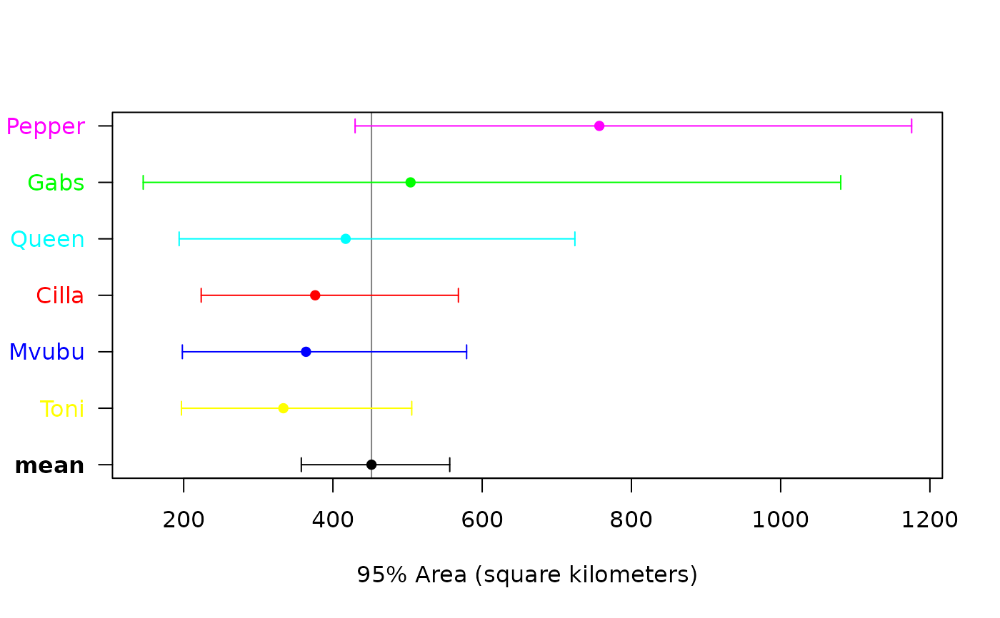
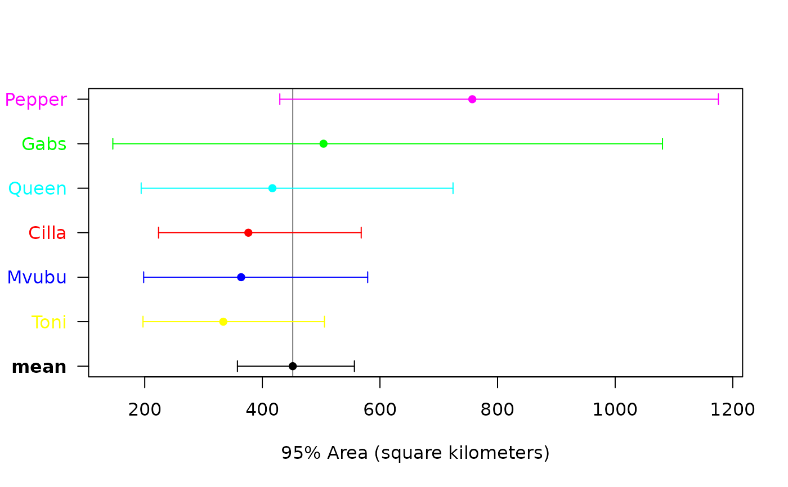

Meta-analysis of movement-model parameters
meta.RdThese functions estimate population-level mean parameters from individual movement models and related estimates, including AKDE home-range areas, while taking into account estimation uncertainty.
meta(x,variable="area",level=0.95,level.UD=0.95,method="MLE",IC="AICc",boot=FALSE,
error=0.01,debias=TRUE,verbose=FALSE,units=TRUE,plot=TRUE,sort=FALSE,mean=TRUE,
col="black",...)
funnel(x,y,variable="area",precision="t",level=0.95,level.UD=0.95,...)Arguments
- x
A named list of
ctmmmovement-model objects,UDobjects,UDsummaryoutput,speedoutput, or 2\(\times\)2overlapobjects constituting a sampled population, or a named list of such lists, with each constituting a sampled population.- y
An optional named list of
telemetryobjects for the funnel-plotprecisionvariable.- variable
Biological ``effect'' variable of interest for
ctmmobject arguments. Can be"area","diffusion","speed","tau position", or"tau velocity".- precision
Precision variable of interest. Can be
"t"for sampling time period or time interval,"n"for nominal sample size,"N"or"DOF"for effective sample size.- level
Confidence level for parameter estimates.
- level.UD
Coverage level for home-range estimates. E.g., 50% core home range.
- method
Statistical estimator used---either maximum likelihood estimation based (
"MLE") or approximate `best linear unbiased estimator' ("BLUE")---for comparison purposes.- IC
Information criterion to determine whether or not population variation can be estimated. Can be
"AICc",AIC, or"BIC".- boot
Perform a parametric bootstrap for confidence intervals and first-order bias correction if
debias=TRUE.- error
Relative error tolerance for parametric bootstrap.
- debias
Apply Bessel's inverse-Gaussian correction and various other bias corrections if
method="MLE", REML ifmethod="BLUE", and an additional first-order correction ifboot=TRUE.- verbose
Return a list of both population and meta-population analyses if
TRUEandxis a list of population lists.- units
Convert result to natural units.
- plot
Generate a meta-analysis forest plot.
- sort
Sort individuals by their point estimates in forest plot.
- mean
Include population mean estimate in forest plot.
- col
Color(s) for individual labels and error bars.
- ...
Further arguments passed to
plotormeta.
Details
meta employs a custom \(\chi^2\)-IG hierarchical model to calculate debiased population mean estimates of positive scale parameters,
including home-range areas, diffusion rates, mean speeds, and autocorrelation timescales.
Model selection is performed between the \(\chi^2\)-IG population model (with population mean and variance) and the Dirac-\(\delta\) population model (population mean only).
Population ``coefficient of variation'' (CoV) estimates are also provided.
Further details are given in Fleming et al (2022).
Value
If x constitutes a sampled population, then meta returns a table with rows corresponding to the population mean and coefficient of variation.
If x constitutes a list of sampled populations, then meta returns confidence intervals on the population mean variable ratios.
References
C. H. Fleming, I. Deznabi, S. Alavi, M. C. Crofoot, B. T. Hirsch, E. P. Medici, M. J. Noonan, R. Kays, W. F. Fagan, D. Sheldon, J. M. Calabrese, ``Population-level inference for home-range areas'', Methods in Ecology and Evolution 13:5 1027--1041 (2022) doi:10.1111/2041-210X.13815 .
Note
The AICc formula is approximated via the Gaussian relation.
Confidence intervals depicted in the forest plot are \(\chi^2\) and may differ from the output of summary() in the case of mean speed and timescale parameters with small effective sample sizes.
As mean ratio estimates are debiased, reciprocal estimates can differ slightly.
Examples
# \donttest{
# load package and data
library(ctmm)
data(buffalo)
# fit movement models
FITS <- AKDES <- list()
for(i in 1:length(buffalo))
{
GUESS <- ctmm.guess(buffalo[[i]],interactive=FALSE)
# use ctmm.select unless you are certain that the selected model is OUF
FITS[[i]] <- ctmm.fit(buffalo[[i]],GUESS)
}
# calculate AKDES on a consistent grid
AKDES <- akde(buffalo,FITS)
#> Default grid size of 3 minutes chosen for bandwidth(...,fast=TRUE).
#> Default grid size of 2 minutes chosen for bandwidth(...,fast=TRUE).
#> Default grid size of 2 minutes chosen for bandwidth(...,fast=TRUE).
#> Default grid size of 3 minutes chosen for bandwidth(...,fast=TRUE).
#> Default grid size of 2 minutes chosen for bandwidth(...,fast=TRUE).
#> Default grid size of 5 minutes chosen for bandwidth(...,fast=TRUE).
# color to be spatially distinct
COL <- color(AKDES,by='individual')
# plot AKDEs
plot(AKDES,col.DF=COL,col.level=COL,col.grid=NA,level=NA)
 # meta-analysis of buffalo home-range areas
meta(AKDES,col=c(COL,'black'),sort=TRUE)
#> ΔAICc
#> Dirac-δ 0.00000
#> inverse-Gaussian 3.83404

#> low est high
#> mean (km²) 357.63 451.6816 556.5468
#> CoV² (RVAR) 0.00 0.0000 Inf
#> CoV (RSTD) 0.00 0.0000 Inf
# funnel plot to check for sampling bias
funnel(AKDES,buffalo)
# }
# meta-analysis of buffalo home-range areas
meta(AKDES,col=c(COL,'black'),sort=TRUE)
#> ΔAICc
#> Dirac-δ 0.00000
#> inverse-Gaussian 3.83404

#> low est high
#> mean (km²) 357.63 451.6816 556.5468
#> CoV² (RVAR) 0.00 0.0000 Inf
#> CoV (RSTD) 0.00 0.0000 Inf
# funnel plot to check for sampling bias
funnel(AKDES,buffalo)
# }